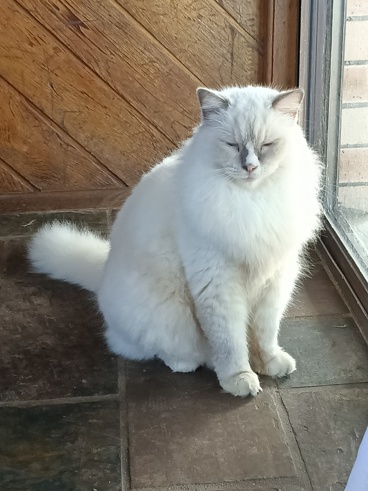
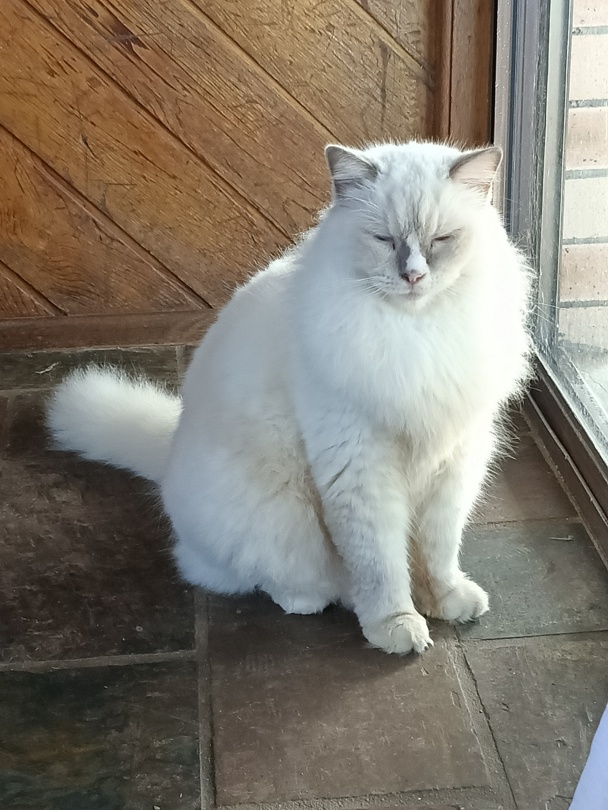
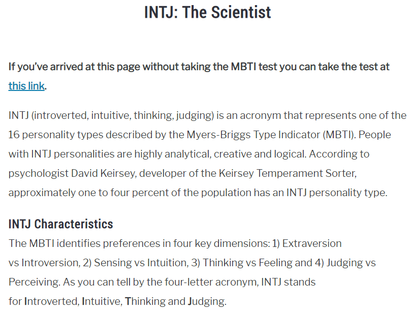
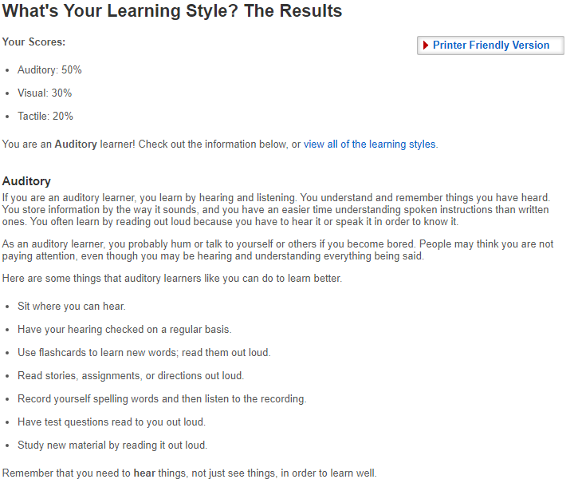
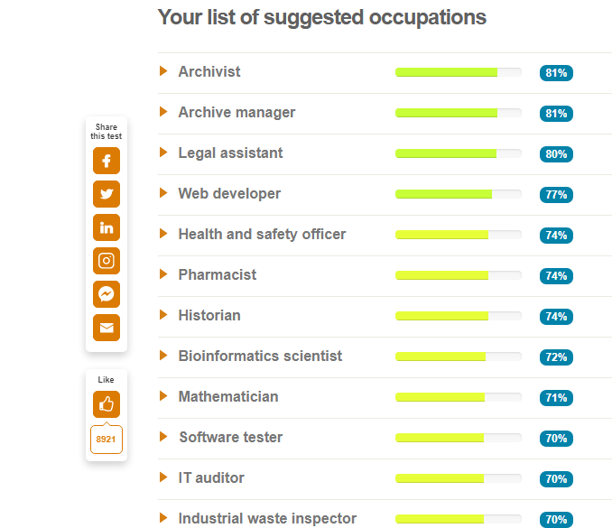

Name: Amanda Jane Woodman
Student #: S3865265
Email: S3865265@student.rmit.edu.auEthnicity: European (Polish, Swedish, Scottish, British)
Nationality: Australian Current Education: Cert III in Information, Digital Media & Technology (Support Specialization) - Axiom College(Graduated March 2020) Spoken Languages: English. I'm currently looking into studying Japanese as well!Fun fact: I've competed in multiple singing competitions when I was younger. I never lost a single competition with my team.
I also have 2 Purebred Ragdoll cats named Yuuki and Sebastian.Yuuki in the first picture, and Sebastian in the second:
 

I liked gaming from a young age and wanted to pursue the career as a developer.
I became interested in the IT industry, when I started to learn more about technology and the things that we can create with it.
I want to create cutting edge software, that makes jobs easier for people to complete.
If I can produce good results from my software then that allows me to build my platform, to showcase my portfolio to the world.
My software can be created to save peoples lives, to create a platform for others to grow from. The possibilities are endless in IT, its a very dynamic industry and career path.
I don't think there was a particular event, as I was always interested in IT from a very young age.
I'm not sure entirely what sparked my interest but I remember reading articles,
watching videos on YouTube about people who came from nothing and slowly build themselves up to work at various company's,
create software and applications that people use in their everyday lives and develop their own games by themselves from start to finish.
I found it fascinating that you could do so many different avenues with IT since it’s such a diverse industry.
I have previously studied an IT certificate III Information Technology, Communications, and Design via Axiom College.
I graduated in March 2020. I completed the course within a few months even though I had a full year to complete it.
I found it very boring because it wasn't challenging and I became extremely unmotivated in regards to studying.
I chose RMIT because I thought that it would be one of the best university's to study Information Technology. RMIT is ranked as one of the best university's in Australia.
As IT is my chosen field that I wish to partake in, RMIT's Information Technology programs, are ranked as one of the most recognized programs within Australia and around the globe.
The exchange-student programs that are offered by the university; to study abroad for a semester is an amazing opportunity that I would love to take part in.
Graduates of the university are often highly regarded in their chosen field, equipped with the technical knowledge and skills required to enter the workforce with confidence.
The teachers at RMIT are industry experts who apply their expertise knowledge to provide students with a skill-based and practical learning experience.
I expect to learn the proper fundamentals to form the base programming knowledge. Build on the current skills that I have, to further my education and to become more informed about the industry, and IT as a whole. I expect to learn the skills required to work in the industry that I'm studying for. I want to have a sound knowledge of industry practices, current software's and trends.
This position is for JR/MID/SR Developers or Software engineer. This position values an experienced C++ programmer, an understanding with rendering and design.
with 3D design knowledge. This particular position is more favoured towards the graphics and rendering team.I'm interested in this particular job firstly because I want to develop my own software and games. This particular field is the most interesting to me, due to being able to design a product that the users would enjoy using or playing whilst I have fun developing it with the team.
HTML + CSS + JavaScript + Python
3D modeling via Blender
Graphic Design via Photoshop
Cert III in Information, Digital Media & Technology (Support Specialization) - Axiom College (March 2020)
Currently studying my Bachelors of IT with RMIT.
I need to finish my degree with RMIT, and try to pick up freelance work while I'm studying to build up a small portfolio. After that I would like to become more accustomed with the software and issues that company's currently face to gain a further understanding about IT in the current time that were living in which must be difficult for some companies/people. Building up my confidence in IT related field by pursuing further study, trying to become vendor certified in a particular program/software. Partaking in an internship to build my experience would also be a way for me to obtain further skills required for the position.
The tests mean that I have an INTJ personality type. I am more than capable of working on my own or in a team environment. I like to analyze my ideas and invent smarter solutions to the problem. Working by myself is desirable, but a team environment is what allows us to flourish.
These results would influence my behave in a positive way. I like having a though out plan when it comes to completing assignments. I have standards which I intend to uphold. I am open to something innovative to complete the same task in a more efficient way though. I like to engage in a workplace that follows set rules, a structured environment.
I want to form a team based on my strengths, skills and weakness's. When the team is well rounded, the productivity is increased by ten-fold. Having the abilities of others at your disposal, and having the ability to harness them, is what creates a truly amazing team.
The first image is my Myer-Briggs personality test result. The second image is my Learning style test result. The third image is my from future career test result
  The game would portray the story of an individual living in a corrupt society on the brink of collapsing, due to civil war/conflicts between government officials, gang warfare and other extremist groups.
The story branch's depending on the players decisions, this will affect the world that the protagonist exists in.
The protagonist of the game has the choice to help rescue people from the world they live it, to provide them with a more just cause or follow the darkness to create an already bleak further darker then it was before.
The game will be set as a single player role playing/adventure with stealth elements/aspects depending on the users play style. Co-Op & multiplayer maybe a viable feature in the future development of the game.
The game will call upon you to make choices, depending on your choice, it shapes the world around you and for the other characters.
The game is going to force you to make ethical or unethical decisions to complete the mission, shaping what role you play in the game.
The videogames purpose is to make you think. About the society that the characters have grown up it. How it shapes their lives and how certain characters are the way that they are. The game is going to challenge the moral and ethical standards of the player. The story is heavily dependent on the choices the player makes.
Rating: M15+ to R18+ Genre: Action/Adventure/RPG Aesthetic: Neo-Militarism, Neo Tokyo Protagonist: The user can choose a name for their character, so any name is viable. Supporting Cast: There is more characters and groups in the game, but I will start with these for the moment. Character 1 - Sean. Character 2 - Amira. "Xanta" a corrupt group of elite businessmen and government officials. "The Alerion Movement" An up-and-coming religious cult formed in the scums/slums of the city.
The story of the game will branch, depending on the choices made by the user, over the course of the story. The world is based in a futuristic Neo-Tokyo/Cyber Punk society on the edge of collapsing due to the extensive criminal activities on the rise, a corrupt society that favors fixing problems with money and blood.
The world itself is very diverse and gripping, it immerses the player in the environment, where they feel like their decisions make a difference in the eventual outcome or beginning of the end. The game has extremist themes and violence, therefore is not recommended for younger people. This character has a rough outlook on life. They were used in an illegal smuggling ring but managed to ensue are riot which allowed them and other people to escape their captors.
Now they are wanted, hiding from the criminal captors, fighting to stay alive. They learnt how to stay alive, changed their appearance, and have a small convenience store. This character has contacts within society members they can assist the player with missions throughout the course of the game.
This character comes from an upper-class family. Their family has an influential business importing/exporting goods all over the world. The Character did not want to take over the family business and desperately wanted to create their own lifestyle. They started their own illegitimate business selling stolen goods, when things start going well for this character, they meet the Xanta on a chance incident. This character is then thrown into the deep end of darkside of the city's criminal underworld.
"You have the ability to bring peace to the city, to end our suffering, what will you choose?"
"Regulating all gang-related crimes and businesses, creating a safer city for the citizens of "" to live in, but at what cost?""
Signature Car - Ferrari LaFerrari Signature operations - Bribery & Embezzlement. (Money Laundering + Nepotism+ Protection racket) They operate (Men's + Ladies High fashion Streetwear + Suits designer clothing stores as a front for their illegal business indulges/pleasures. The members of this gang are highly skilled "individuals". They are intuitive and cunning in nature, they have no remorse for the people that get in their way, innocent or not. They often run street races as a bait for their victims/clients to get out of debt with them, only for it to end in them leaving in a bodybag if they do not win.
Their signature car of choice - BMW 8 Series Coupe A religious cult, devoid of their emotions, and ability to think. They believe they are higher beings chosen by their "god". They dispel those that are deemed unworthy of saving in their gods eyes. Their Aesthetic - Long dark robes with a cape/hood. The distinct logo on the upper right shoulder shows the loyalty to the cult. They also brandish a very powerful pistol, blessed by their god, to send the sinners back to hell. Signature Location - They're main base of operations, is the church, located in the slums of the city. They recruit anyone that will follow the words of their leader blindly, or by ensuring other means of tactics to ensure their numbers rise. They are favorite activities are to indulge in torturing and brainwashing their members to fit into the ideals that they are so called god created.
Coding in "C++" language Creating a website for your game or business (JS, CSS) Graphic design via Photoshop and Blender - Concept art and design in game (Environmental factors, level design, character design)
C++ - A few months to understand the basics, around 12 months to understand the language.
Blender - 3D Design - Free software I have used this software previously and understand it.
Unity - Free with the Student GitHub developer pack - I have used this software briefly, so I will need to learn more about it.
Unreal engine: This is going to be the engine for my game.
Maya/Blender: For 3D design
Photoshop: This will be used to create the concept art and other visuals of the game.
The game will be created in "C++" language.
When it comes to hardware for game design or gaming in general your budget is going to be on your GPU, CPU and RAM. What I have listed below is what I believe would be a good minimum specs for gaming/game development.
1080TI
I7 7700k
8GB/16GB minimum of ram
SSD required
2 to 3 monitors for workplace flow - (1 monitor for coding, 2nd for designing, 3rd for general use.
The first step, in many, for me to close the gap on becoming a game developer and designer. I want people to experience my game, enjoy all that it has to offer, and to have it leave a lasting impression on them. The edgy aesthetic of the city will appeal to a select audience that I am trying to target with this game. The style and diversity of the characters that are available in the world for the users to interact with, is pleasing from a typical RPG/Adventure style game that is comes off as repetitive and boring. The game that I am developing will hopefully freshen up the industry and add a new perspective to the styles of game that have been developed lately.
Apart from creation of the game itself, hopefully It will inspire others to create change within themselves, the world or their lives. The world is such a diverse place with the many activities available to the player throughout the course of the story.
The original issue is was to create a game that would be entertaining, challenge the social normality's that we have become accustomed to and to create and experience that would leave an impression on the player. It offers players who think outside the box, explore the ins & outs of the map discovering all the secrets, or players who just want a chill/vibe experience. I want to provide all the players their particular play style, whether that's a stealth based approach, a guns blazing, hold W experience or a more tactical experience, It’s up to the player themselves to decide how they want to interact with the world that I'm developing for them.
The music in the game will be inspired from the Synthwave & CyberPunk Music genre. I've attached a mix that will give some idea of the way I want the music to sound like.
I dont own any rights to the music above, If there is any issues I will remove it ASAP.